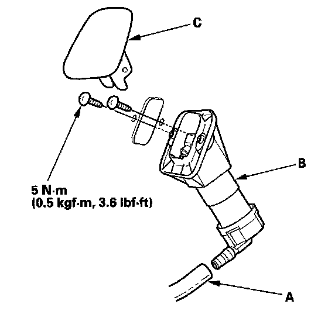

Headlamp Washer Spray Nozzle: Service and Repair
Headlight Washer Nozzle ReplacementCanada models
1. Remove the front bumper, and disconnect the headlight washer tubes from the washer motor.

2. Disconnect the headlight washer tube (A) from the headlight washer nozzle (B).
3. Remove the headlight washer nozzle cover (C).
4. Remove the bolt and two screws, then remove the headlight washer nozzle.
5. Install the nozzle in the reverse order of removal. After installation, check the headlight washer operation.